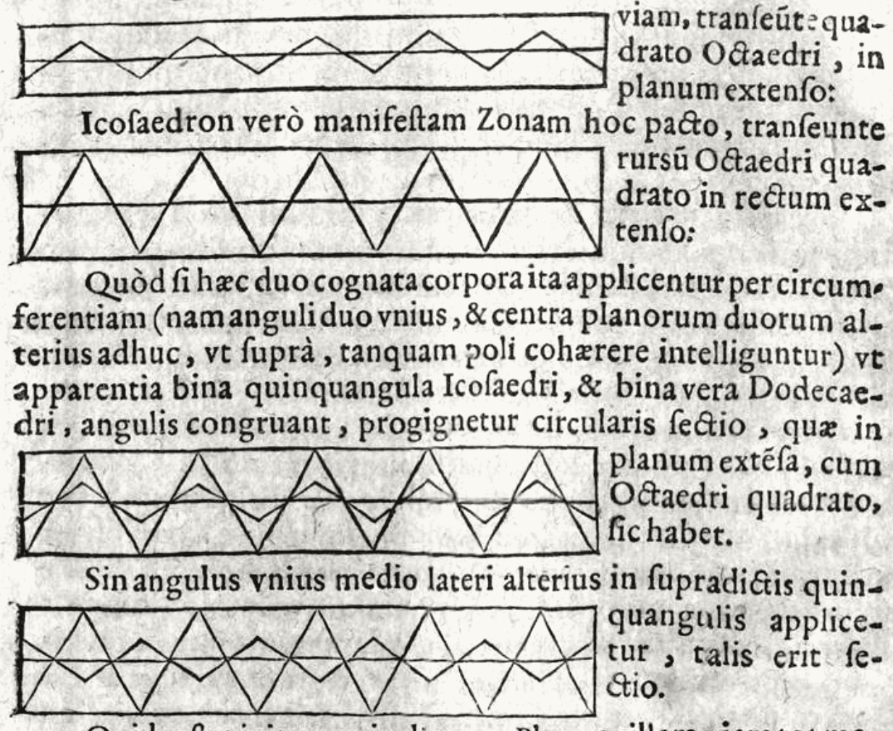

Chapter XI: Orientation of the Solids & Origin of the Zodiac¶
f. mysterium_cosmographicum:0048 · p. p. 38 (Equatorial Zodiac Bands)Anticipating objections from Aristotelian physicists who protest deducing physical planetary zones from immaterial mathematical figures, Kepler answers briskly that the Creator is Mind (mens), unconstrained in adapting forces and celestial circles to intelligible geometric archetypes. He then investigates how the five nested solids are oriented relative to one another so as to define a common axis (the ecliptic poles) and a common equatorial belt—the Zodiac.
Linking opposite face-centers of the three primary solids with opposite vertices of the two secondary solids along one polar axis aligns the two many-faced golden bodies—the Dodecahedron and Icosahedron—around the same equatorial plane traced by the Octahedron’s central square. Unrolling these equatorial zones onto the plane (as depicted in Kepler’s four woodcut strip diagrams on folio p. 38):
Dodecahedron belt: Ten alternating edges zig-zag uniformly around the equator, bisected straight through the middle by the unrolled square of the Octahedron.
Icosahedron belt: Ten triangular faces form a crisp band of alternating upright and inverted equilateral triangles centered on the same equatorial midline.
In-phase superposition: Aligning vertices of the Icosahedron’s polar pentagons with vertices of the Dodecahedron’s polar pentagons produces a symmetric double-wave band around the ecliptic line.
Out-of-phase superposition: Rotating one solid so its vertices align with edge midpoints of the other generates an interlocking lattice of lozenges spanning the ecliptic latitude zone.


From these superimposed polyhedral equators—the Dodecahedron belt (dodbelt), the Icosahedron belt (icobelt), and the Octahedron equatorial midline (octequator) bounded symmetrically between the two poles—Kepler derives the geometric archetype of the Zodiacal band along which the planets travel.